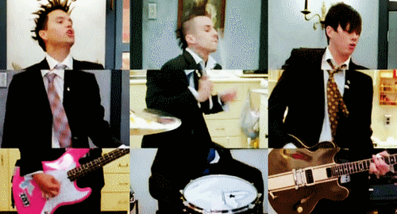

Blink-182 (também estilizado como Blink 182 ou blink-182) é uma banda de rock americana formada no
ano de 1992, na Califórnia. Atualmente, o grupo é composto por Mark Hoppus (vocal e baixo), Travis
Barker (bateria e percussão) e Tom DeLonge (vocal e guitarra). Fundada originalmente por Hoppus, Tom
DeLonge (guitarra e vocal) e Scott Raynor (bateria), a banda focou seu estilo musical no punk rock da
Califórnia, ganhando notoriedade no cenário musical através dos concertos e implementando humor
escatológico. Hoppus é o único membro constante da banda.
O grupo alcançou grande fama em 1999 com o lançamento do álbum Enema of the State. Em fevereiro de 2005,
a banda anunciou em seu site um hiato indefinido. Contudo, em 8 de fevereiro de 2009, eles se reuniriam
novamente após quatro anos com planos de voltar aos palcos e estúdios de gravação. Em 2015, o fundador
Tom DeLonge deixou a banda, dando lugar ao vocalista e guitarrista do Alkaline Trio, Matt Skiba.

Minha banda favorita 182
Blink-182 sem dúvida é minha banda favorita, acho que ficou bem claro - hahaha.
Esse ano pela primeira vez eles vão passar pelo Brasil em sua nova turne, com sua formação antiga com Mark Hoppus (vocal e baixo), Travis Baker (bateriata e percussão) e Tom Delonge (vocal e guitarra).
Vão tocar apenas em um show exclusivo no festival do Lollapalooza Brasil, pensa na minha emoção depois de anos porder viver essa experiência.
Com certeza eles marcaram muito a adolescência de uma galera que, como eu, nasceu nos anos 80 e 90!
Tom, Travis e Mark eram os três integrantes quando escutei uma música pela primeira vez. E cada um tinha o seu preferido, eu, sempre preferi
o Travis, achava ele muito f*** – escolha o seu adjetivo haha – na bateria.
Até mesmo a geração mais nova não resiste ao Blink, confira o vídeo abaixo:
As músicas deles acompanharam várias das minhas paixões de adolescentes. E confesso que sempre me
pego ouvindo as músicas deles, fazendo looping, e toda aquela coisa louca de quem
ouve 6 mil vezes as mesmas músicas – hahaha! E olha, se duvidar, vocês farão o mesmo.
Agora, larguem tudo – a menos se você estiver com um gatinho no seu colo – e venham aqui relaxar
com esse momento de nostalgia na playlist montada por mim! Escute
aqui!
O Inico
O Blink-182 era formado por três membros: Thomas Matthew DeLonge, Jr. (Tom) na guitarra e no vocal,
Mark Allan Hoppus (Mark) no baixo e vocal, Scott Raynor (Scott) na bateria. O grupo era conhecido no
mundo todo por suas melodias pop punk que... Continue lendo